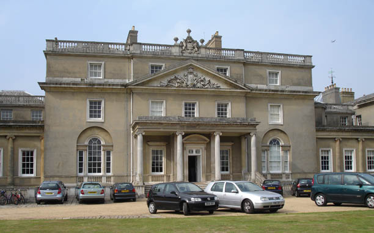
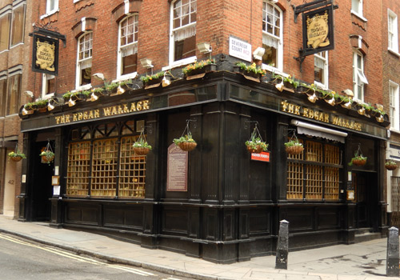
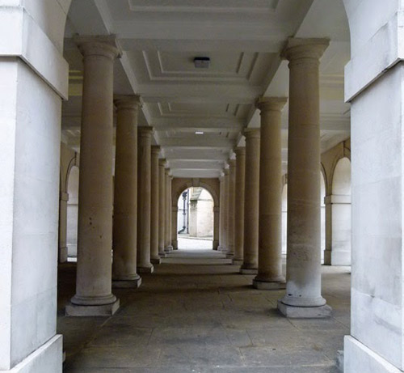

Alexandra Court, Queen's Gate, London SW7 used as 'Borodene Mansions' where Ariadne Oliver lives along with the "Three Girls". (Also seen in 'Cards on the Table').

Wrotham Park, Barnet used as 'Crosshedges House'. (Also seen in 'The Adventure of Johnnie Waverly').

The Edgar Wallace Pub in Essex Street, London WC2 used as 'The Merry Shamrock Tea Rooms'.

Pump Cloisters in Middle Temple, London WC2 where Ariadne Oliver is attacked after visiting 'David Baker's Studio'. (Also used in 'The Clocks').